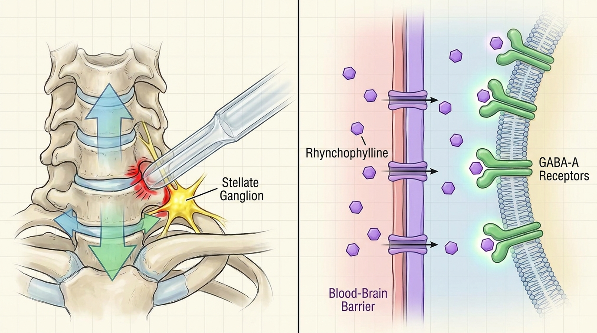

자려고 누우면 목 뒤가 조이듯 뻣뻣하고 가슴이 두근거려 잠들기 힘드신가요? 경흉추 접합부 불균형과 자율신경 실조의 연관성
경흉추 접합부는 별상신경절 및 교감신경절 사슬과 해부학적으로 인접해 있어, 이 구간의 부정렬은 신경절에 만성적인 기계적 긴장을 가할 수 있습니다. 이는 압반사 감수성 저하 및 교감-부교감 불균형을 초래하여 심박변이도 지표를 악화시키고, 중추신경계의 과각성 상태와 결합되어 수면 개시 지연 및 수면 구조 분절화로 이어질 수 있습니다.
1. 경흉추 접합부 정렬 이상과 자율신경실조증·만성 불면증의 신경생리학적 연관성
경흉추 접합부는 경추의 유연한 곡선 구조와 흉추의 상대적으로 고정된 구조가 만나는 생체역학적 전환 지점으로, 이 부위는 해부학적으로 별상신경절 및 상부 흉부 교감신경절 사슬과 밀접하게 위치한다. 장시간의 전방 두부 자세, 거북목 패턴, 스마트폰 사용으로 인한 반복적 굴곡 부하는 경흉추 접합부의 분절 간 정상적인 움직임을 제한하고, 주변 연부 조직 및 신경절에 지속적인 기계적 압박을 가하는 것으로 알려져 있다. 이러한 구조적 압박은 성상신경절의 만성적 과활성을 유발할 수 있으며, 이는 심장 및 두경부로 향하는 교감신경 출력을 증가시켜 자율신경계의 항상성을 교란하는 병리적 경로로 작용할 수 있다. 임상적으로 이러한 환자군은 야간에 자려고 누우면 목 뒤가 조이듯 뻣뻣해지는 느낌과 함께 심장이 두근거리는 증상을 동반하는 경우가 관찰되며, 이는 단순한 근골격계 긴장이 아니라 자율신경 조절 이상과 결부된 복합적 병태로 이해할 필요가 있다. 성상신경절의 과활성은 압반사 감수성을 저하시켜 심박수 변동성을 좁히고, 이는 심박변이도(HRV) 지표의 악화로 나타날 수 있다. HRV 저하는 자율신경계의 유연성 감소를 반영하는 객관적 생리 지표로서, 만성적인 교감신경 우위 상태가 지속될 경우 수면 개시를 위한 부교감신경 활성화가 원활히 이루어지지 못하는 것으로 사료된다. 이러한 말초 자율신경계의 구조적 병리는 중추신경계의 과각성 상태와 상호작용하여 불안성 불면의 다층적 기전을 형성하는 것으로 보이며, 이는 단일 치료 축만으로는 해소되기 어려운 복합적 병리 구조를 시사한다.
2. 성상신경절 감압 및 뇌신경 억제성 전달물질 조절을 위한 복합 치료 메커니즘

불안성 불면의 병리는 말초 구조적 문제와 중추 신경화학적 문제가 중첩된 형태로 나타나므로, 치료적 접근 또한 두 축을 동시에 고려하는 것이 학술적으로 타당하다. 생체역학적 공간 감압 추나 (SART Protocol)는 경흉추 접합부의 분절 간 공간을 정밀하게 확보하여 별상신경절 및 인접 교감신경절 사슬에 가해지는 기계적 긴장을 완화하는 것을 목표로 한다. 이 감압 시술을 통해 신경절의 만성적 과활성이 정상화되면 압반사 감수성이 회복되고, 교감-부교감 균형이 재조정되어 심박변이도 지표가 개선되는 경향이 나타날 수 있다. 바디올한의원 자율신경 안정 프로토콜에서 관찰되는 누적 자율신경 및 수면장애 임상 경험은, 교감신경 긴장 완화 및 심박변이도 개선 경향을 나타내며, 이는 인용된 학술 연구[1]에서 입증된 후두하부 감압을 통한 심박변이도 지표 개선 기전과 학술적으로 궤를 함께합니다. 한편, 구조적 감압만으로는 이미 활성화된 중추신경계의 과각성 상태를 직접 완화하기 어려우므로, 억간산과 같은 hGMP 규격 체질 맞춤 한약의 병행이 요구된다. 억간산의 핵심 성분인 조구등에서 유래한 린코필린은 혈액-뇌 장벽을 통과하여 GABA-A 수용체 매개 억제성 신경전달을 강화하고, HPA축의 과활성을 억제하는 방향으로 작용하는 것으로 보고된다. 이러한 중추성 약리 기전이 최적의 효능에 도달하기 위해서는 말초 자율신경 신호 경로와 대뇌 혈류 관류가 정상화된 생리적 토대가 선행되어야 하며, 이 지점에서 경흉추 접합부 감압과 억간산의 상호 보완적 관계가 성립하는 것으로 사료된다.
| 구분 | 단순 수면유도제/신경안정제 | 생체역학적 공간 감압 추나(SART Protocol) 및 hGMP 규격 체질 맞춤 한약 |
|---|---|---|
| 접근 방식 | 중추신경 억제 작용에 국한된 대증적 진정 | 말초 구조적 감압과 중추 약리 조절의 이중 병행 접근 |
| 자율신경 개선 | 일시적 진정 효과 위주, 근본적 자율신경 조절 제한적 | 성상신경절 긴장 완화를 통한 심박변이도 개선 지향 |
| 작용 기전 | 단일 수용체 경로에 의존 | GABA-A 수용체 강화 및 HPA축 조절을 통한 다층적 접근 |
| 지속성 고려 | 내성 및 의존 우려에 대한 학술적 논의 존재 | 구조적 원인 개선과 체질 맞춤 조정을 통한 지속적 관리 지향 |
3. 경흉추 접합부 별상신경절 과활성 및 불안성 불면 관련 학술 임상 논문 분석
경흉추 접합부의 생체역학적 부정렬이 자율신경계 조절 이상과 불안성 불면에 미치는 영향을 학술적으로 규명한 연구들은 구조적 접근과 약리학적 접근이라는 두 축의 상호 보완적 필요성을 시사한다. 첫 번째로 주목할 연구는 후두하부 및 상부 경추 영역의 기계적 감압이 심박변이도 지표를 개선한다는 것을 제시하며, 이는 경흉추 접합부의 생체역학적 부정렬이 인접한 별상신경절 및 교감신경절 사슬에 가해지는 물리적 긴장을 유발하여 압반사 감수성 저하와 교감-부교감 불균형을 초래할 수 있다는 병리 기전과 직접적으로 연관된다[1]. 생체역학적 공간 감압 추나 (SART Protocol)를 통해 이 접합부의 구조적 압박을 해소하면 성상신경절의 만성적 과활성이 완화되어 심장 자율신경 조절 능력이 정상화될 것으로 사료되며, 이는 말초 자율신경 신호 경로와 대뇌 혈류 관류를 회복시켜 이후 중추신경계에 작용하는 한약 성분이 최적의 치료 효능에 도달할 수 있는 생리적 토대를 마련하는 선행 조건으로서 학술적 의의를 지닌다. 두 번째로 주목할 연구는 전통 한약 처방인 억간산이 신경증적 장애를 지닌 노년층 환자의 수면 장애 개선에 효과가 있음을 제시하며, 이는 조구등에서 유래한 생리활성 성분 린코필린이 혈액-뇌 장벽을 통과하여 GABA-A 수용체 매개 억제성 신경전달을 강화하고 HPA축의 과활성을 억제함으로써 중추성 과각성 상태를 완화하는 약리 기전과 부합한다[2]. hGMP 규격 체질 맞춤 한약을 통해 전달되는 이러한 신경약리학적 작용은 수면 개시 지연과 수면 구조의 분절화를 유발하는 중추신경계 병리를 직접적으로 표적하는 것으로 보이며, 이는 척추 구조 교정만으로는 해소할 수 없는 지속적인 중추성 각성 상태에 대응하는 보완적 치료 축으로서 학술적 타당성을 지닌다. 두 논문의 병리 기전을 종합하면, 경흉추 접합부 감압을 통한 말초 자율신경 정상화가 선행되고, 이어서 억간산의 중추성 GABA 및 HPA축 조절 작용이 결합될 때 불안성 불면의 다층적 병태에 대한 보다 포괄적인 학술적 접근이 가능할 것으로 판단된다.
4. 바디올 생체역학적 공간 감압 추나 (SART Protocol) 및 자율신경 맞춤 한약 프로토콜
바디올한의원은 경흉추 접합부 부정렬과 불안성 불면의 상관관계에 대한 학술적 근거를 바탕으로, 생체역학적 공간 감압 추나 (SART Protocol)를 통해 별상신경절 및 인접 교감신경절 사슬에 가해지는 기계적 긴장을 정밀하게 완화하는 시술을 시행한다. 이와 병행하여 hGMP 규격 체질 맞춤 한약 처방인 억간산을 통해 조구등 유래 린코필린 성분이 GABA-A 수용체 매개 억제성 신경전달을 강화하고 HPA축의 과활성을 조절하도록 설계된 복합 프로토콜을 운영하고 있다. 이는 바디올한의원의 생체역학적 공간 감압 추나 (SART Protocol) 및 hGMP 규격 체질 맞춤 한약 치료가 자율신경 실조 및 불안성 불면에 대한 안전하고 객관적인 근거를 지닌 한의학적 보존 치료 선택지 중 하나로 고려될 수 있음을 시사한다. 진료 과정에서는 경흉추 접합부의 분절 정렬 상태를 정밀하게 평가하고, 개인별 체질과 자율신경 반응 양상을 종합적으로 분석하여 감압 추나 시술과 한약 처방의 병행 비율을 개별화하는 것을 원칙으로 한다. 이러한 구조적 감압과 중추 약리 조절의 병행 접근은 단일 치료 축의 한계를 보완하며, 불안성 불면 환자의 심박변이도 및 수면 구조 개선에 대한 지속적인 학술적 관찰이 필요한 영역으로 평가된다.
구조적 감압은 말초 자율신경계의 성상신경절 과활성을 완화하여 심박변이도를 개선하는 선행 조건을 마련하지만, 이미 형성된 중추신경계의 과각성 상태는 구조 교정만으로 완전히 해소되기 어렵습니다. 억간산의 중추성 GABA-A 수용체 강화 및 HPA축 조절 작용이 이 지점을 보완하여, 말초와 중추 두 병리 축을 동시에 다루는 것이 학술적으로 타당합니다.
참고문헌
- Giles, et al. (2013), 'Suboccipital Decompression Enhances Heart Rate Variability Indices of Cardiac Control in Healthy Subjects', The Journal of Alternative and Complementary Medicine. DOI: 10.1089/acm.2011.0031
- International Journal of Neuropsychopharmacology, et al. (2016), 'PS28. The effect of Yokukansan, a traditional herbal medicine, on sleep disturbances in elderly patients with neurotic disorders', International Journal of Neuropsychopharmacology. DOI: 10.1093/ijnp/pyw043.028